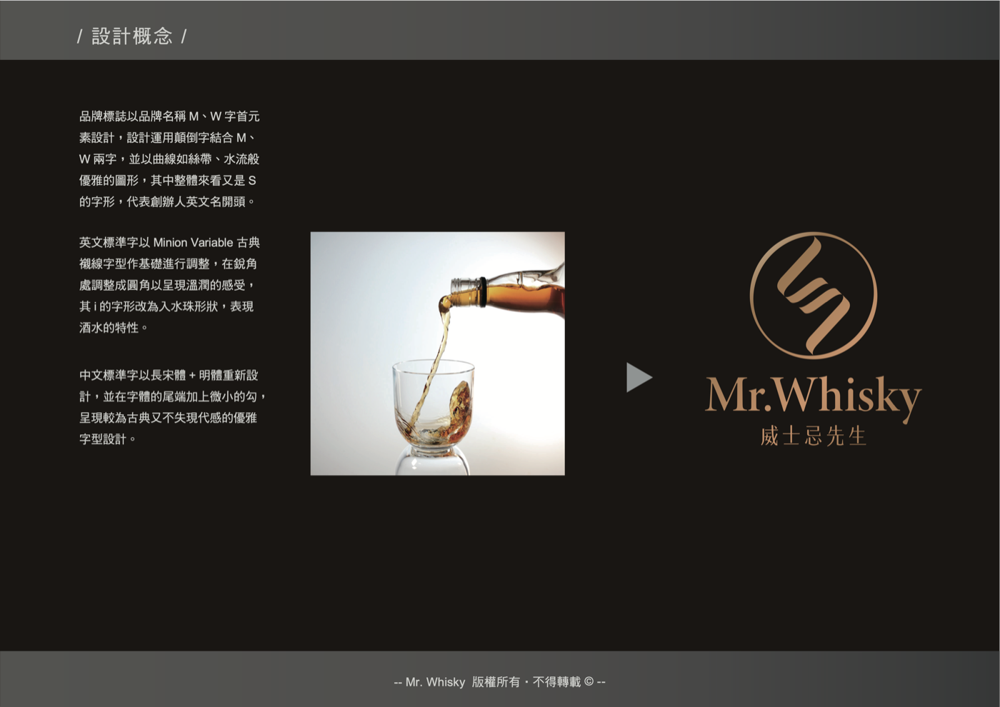

Brand CIS
Mr.Whisky 威士忌先生
Discover your fine & rare bottle
本站為 Mr.Whisky 威士忌先生的品牌視覺與語氣規範參考站。所有素材可直接複製連結貼給設計工具或合作對象，確保品牌呈現一致性。
Design Concept
品牌設計概念
品牌標誌以品牌名稱 M、W 字首元素設計，運用顛倒字結合 M、W 兩字，並以曲線如絲帶、水流般優雅的圖形，其中整體來看又是 S 的字形，代表創辦人英文名開頭。
英文標準字以 Minion Variable 古典襯線字型作基礎進行調整，在銳角處調整成圓角以呈現溫潤的感受，其 i 的字形改為入水珠形狀，表現酒水的特性。
中文標準字以長宋體 + 明體重新設計，並在字體的尾端加上微小的勾，呈現較為古典又不失現代感的優雅字型設計。

Index
規範目錄
For AI Tools
給 AI 設計工具
把下列 prompt 貼給 Claude 或其他 AI 設計工具，後續所有產出皆會依本品牌規範執行——色票、字體、9 個 Logo 變體、輔助圖型與應用範例皆已內建，不需另外傳送素材。
請先 fetch 這份品牌規範，後續所有設計都依照它執行： https://raw.githubusercontent.com/mrwhisky-steve/mrwhisky-cis/main/prompts/brand-prompt.md
也可直接到 GitHub 預覽完整 prompt 內容。